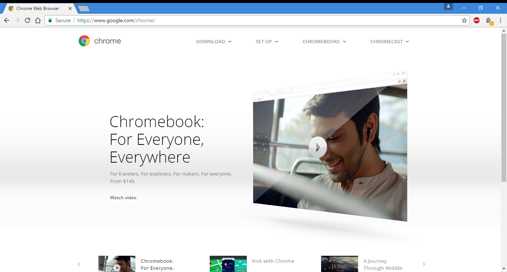

Security
Chrome periodically takes updates of two blacklist, and that is one for phishing and one for malware, and warns users when they attempt to visit a site flagged as potentially harmfull.
Chrome uses a process - allocation model to sandbox tabs. Sandbox is a security mechanism for separating running programs. Using the principle of least privilege, each tab process cannot interact whit critical memory functions or other tab processes. The Sandbox Team is said to have "taken this existing process boundary and made it into a jail". This enforces a computer security model whereby there are two levels of multilevel security (user and sandbox). The sandbox can only respond to communiction requests initiated by the user. On Linux sandboxing uses the seccomp mode (short for secure computing mode) which is a computer security facility in the Linux kernel.
Since 2008, Chrome has been faulted for not including a master password to prevent casual access to a user's passwords, and their developers said that a master password does not provide real security agaist hackers and they refused to implement one. In February 2014, the Windows version was set to ask user to enter the Windows account pasword before showing saved passowrds.
In January 2015, TorrentFreak reported that using Chrome when connected to the internet using a VPN can be a serious security issue due to the browser's support for WebRTC (Web Real - Time Communication).
On September 12, 2016, it was decided that starting with Chrome 56, users will be warned when they visit non - secure HTTP websites to encourage more sites to make the transition to HTTPS.